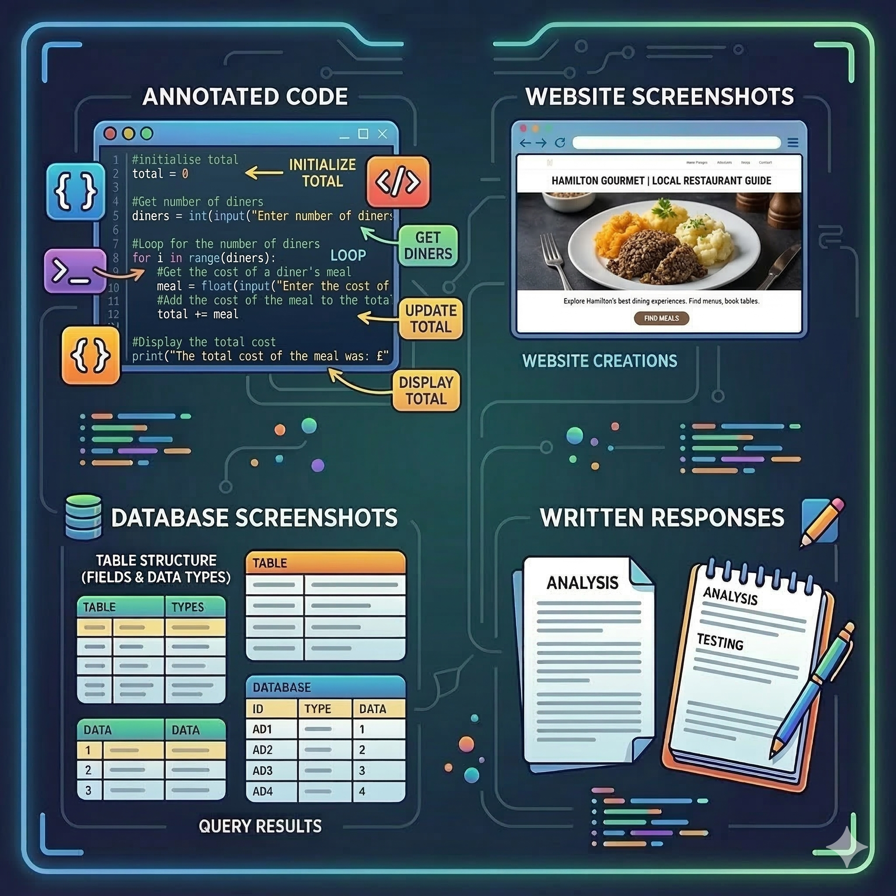

National 4
Checklist and Evidence
Below is a checklist of all of the skills that you will have to demonstrate to pass your National 4 Computing Science qualification. You can use this to track your progress throughout the year. The checklist is divided into three sections, one for each of the units that you will complete. You have a choice either to use the interactive checklist below, or to click on the button below to download a spreadsheet version.
If you choose to use the interactive checklist. Click each section to expand it, then tick off each item as you complete it — your progress is saved automatically in your browser. Keep in mind that the save will only persist if you are using the same device and browser.
How you are assessed
In National 4, you don't have to pass a test - you have to demonstrate a skill. Your teacher acts as an assessor who checks your work against SQA standards.
The Pass/Fail System
National 4 is an 'ungraded' course. This means that:
- There are no exams to sit at the end of the course.
- You either get a Pass or a Fail for the whole course.
- You must pass every single "Assessment Standard" (the items on your checklist) to get the full qualification.
What counts as evidence?

Because there is no exam, your teacher needs "Proof of Work" to show the SQA. Every task should be saved carefully, and you need to keep the evidence for your unit assessments and your AVU in a folder. This folder should be kept in a safe place, and you should be able to show it to your teacher if asked.
This evidence can take several forms:
- Annotated Code: A screenshot of your Python code with comments explaining what it does.
- Screenshots: You will need to take screenshots of your MS Access Design Views, any queries you perform and their results, as well as output from code that you run in Python.
- Written responses: You may be required to answer some questions (either in pen or on the computer) and print out your responses.
The best part about N4 is that if a piece of code doesn't work or a database query fails the first time, you can try again! Your teacher can give you feedback, you fix the error and that fixed version counts as your pass!